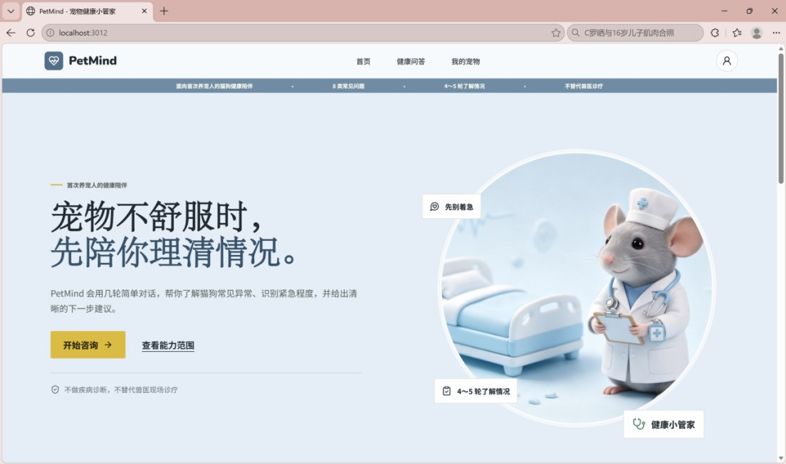
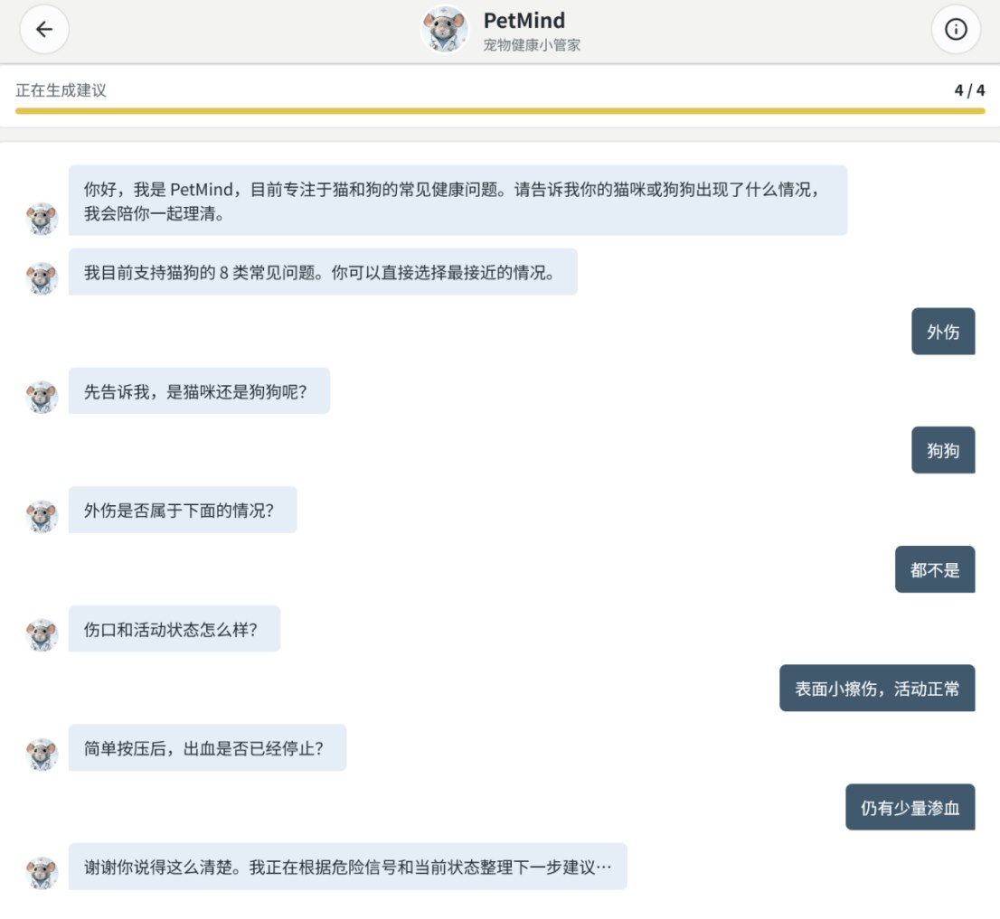
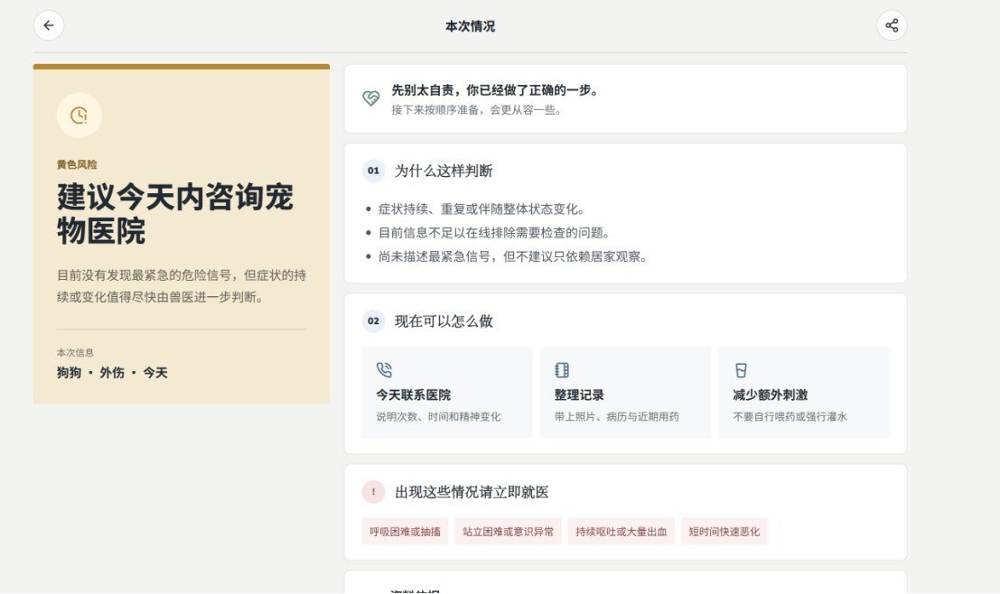
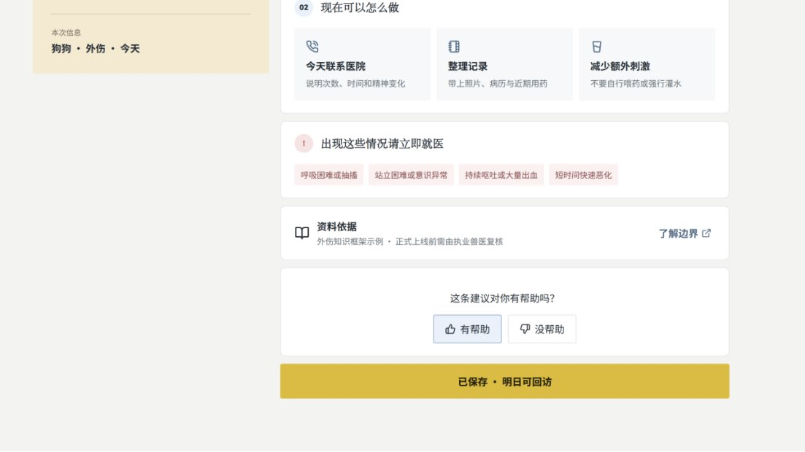
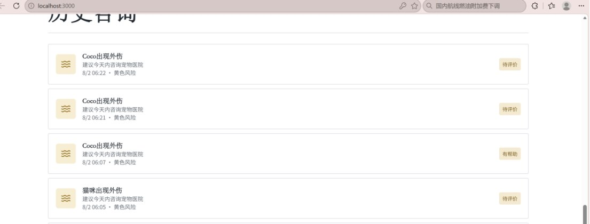

TRAVEL · PRACTICE 03
Could I get a window seat?
意群练习03
Could I get / a window seat / if possible?
AI PRODUCT · DESIGN · CODE
Lulu Product Intern
Personal profile
信息与计算科学本科在读，正在寻找 AI 产品实习机会。我喜欢从用户遇到的具体问题出发，梳理需求、设计流程、搭建原型，再通过测试一点点调整。做 AI 产品时，我也会特别留意回答是否可靠，以及出现异常时用户该怎么办。
Selected work
Could I get / a window seat / if possible?
AI 宠物健康问答 · 2025
面向难以判断猫狗症状紧急程度的养宠用户，设计“结构化追问—危险信号识别—绿黄红风险建议”的健康风险分流 MVP。





Experience
产品部 · 产品运营实习生
用户反馈与产品迭代建立反馈分级与日清机制，从 300+ 条反馈中提炼 3 项高频痛点，撰写 PRD 推动上线。
数据监控与风险预警搭建 Excel 动态余额预警模型，监控 300+ 活跃用户课时，并将监控逻辑整理为运营 SOP。
流程优化与协同梳理多方协作流程，将外教排课冲突率降低 30%，并输出标准化流程图。
AI 辅助内容复盘使用专项 Prompt 对脱敏问题进行分类与归因，经人工复核后形成 SOP 应答模板，用于周度复盘。
A LITTLE MORE
点开一张牌，看看项目之外的我。
END OF PORTFOLIO · WEI LULU
感谢看到这里，期待和你聊聊产品、想法，以及一次合适的实习机会。
EMAIL ME2517125539@qq.com↗ CALL ME195 0773 3892↗